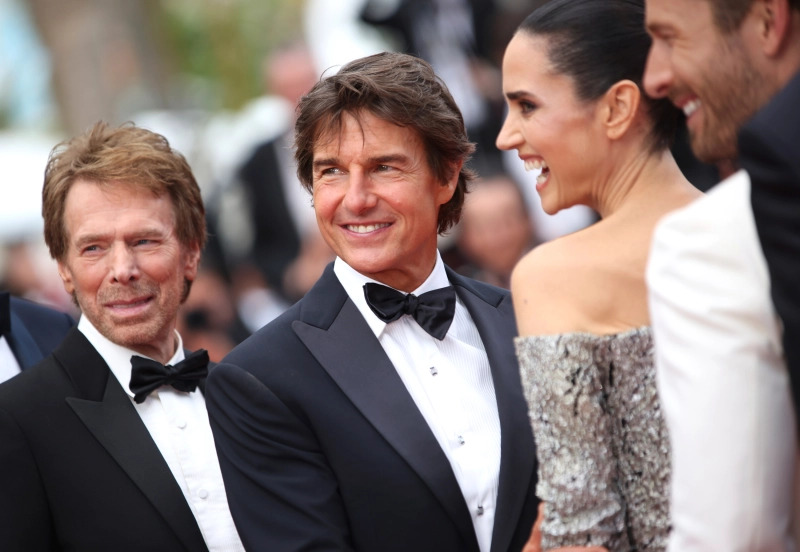
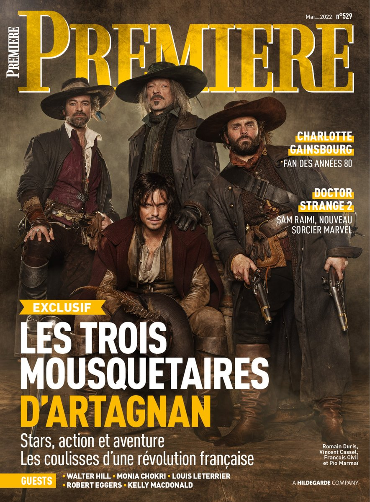

Cannes 2022 Red Carpet: Tom Cruise, Kristen Stewart, Austin Butler, Julia Roberts, Viola Davis, and More
The 2022 Cannes Film Festival kicked off May 17 with some of the world’s biggest stars and revered filmmakers in attendance.
Opening night saw Julianne Moore, special Palme d’Or winner Forest Whitaker, and jurors Rebecca Hall, Deepika Padukone, Noomi Rapace, Asghar Farhadi, Ladj Ly, Jeff Nichols, and Joachim Trier, plus jury president Vincent Lindon, unveil “Final Cut,” the latest from Oscar winner Michel Hazanavicius. As the Ukraine-Russia war continues, Ukrainian president Volodymyr Zelensky made a special guest appearance remotely via live video call.
Wednesday’s buzziest event was the star-studded premiere of “Top Gun: Maverick,” as lead star, producer, and ultimate icon of “contemporary cinema” (according to Cannes festival director Thierry Fremaux) Tom Cruise graced the red carpet alongside Jon Hamm, Jennifer Connelly, Eva Longoria, Jerry Bruckheimer, Elle Fanning, and Kering’s Women in Cinema award winner Viola Davis.
“Three Thousand Years of Longing” co-stars Idris Elba and Tilda Swinton are expected to stun at Cannes with fashion-forward ensembles, opposite writer-director (and former Cannes jury president) George Miller. Austin Butler also debuted his return to golden locks after portraying King of Rock ‘n Roll Elvis Presley for Baz Luhrmann’s not-quite biopic “Elvis.”
And there will hopefully be no fashion “Crimes” as David Cronenberg’s body-horror thriller “Crimes of the Future” debuts at the festival later this week, with Viggo Mortensen, Kristen Stewart, and Léa Seydoux set to prove that being well-dressed really is the new sex, not surgery.
‘The Three Musketeers’ Sells in Major Territories for Pathe International
“The Three Musketeers,” Pathé Films’s $75-million two-part adventure epic saga based on Alexandre Dumas’s masterpiece, has been bought in major international territories rolling off a busy Cannes market.
Pathé unveiled a sprawling 15-minute promoreel for both “The Three Musketeers” – D’Artagnan” and “The Three Musketeers – Milady” at Cannes Marché du Film. Both movies are directed by Martin Bourboulon and boast a star-studded cast, including Vincent Cassel, Eva Green, Vicky Krieps, Romain Duris, Pio Marmaï, François Civil, Lyna Khoudri and Louis Garrel.
Produced by Dimitri Rassam for Chapter 2, a Mediawan Company, and Pathé, the two films were picked up for Latin America (CDC United Network /Cine Video y TV (Zima)), Scandinavia (Nordisk Film), South Korea (First Run Inc.), Poland (Monolith Films), Czech Republic and Slovakia (AQS Inc.), Ex-Yugoslavia (Blitz Films), and Bulgaria, Hungary and Romania Vertical (Entertainment Kft.). Pathé is in advanced talks with distributors for the rest of Asia, the U.K. and the U.S.
Constantin Film in Germany, DeAPlaneta in Spain and Notorious Pictures in Italy boarded the two movies at script stage. Constantin Film and DeAPlaneta are also co-producers along with M6 Films.
“The Three Musketeers – D’Artagnan” will be released in France and Switzerland on April 5, 2023, while “The Three Musketeers – Milady” will be released 8 months later, on Dec. 13., 2023.